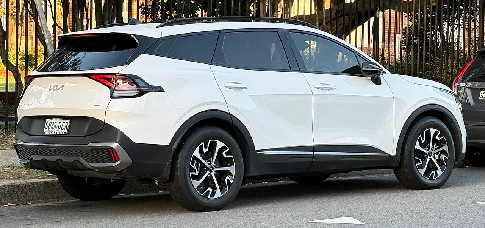
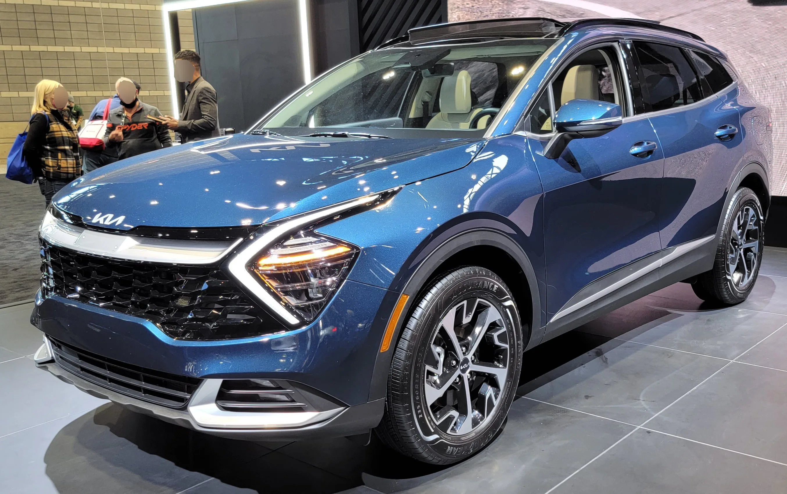

▲ 현재 판매 중인 5세대 스포티지(NQ5). 완전변경 신형(NQ6)의 실제 양산형 사진이 아직 공개되지 않아 비교용으로 소개한다 ⓒ LuvsMG481, Wikimedia Commons (CC BY-SA 4.0)
기아의 베스트셀러 SUV 스포티지가 6세대 완전변경(내부 코드명 NQ6)을 준비하는 가운데, 위장막을 상당 부분 벗은 테스트카가 해외 스파이샷 전문 매체에 포착됐다. 이번에 드러난 모습은 지금까지 나온 예상도나 렌더링보다 한층 구체적이어서, 다음 세대 스포티지의 방향을 가늠할 단서로 주목받고 있다.
1. 디자인 — 곡선을 버리고 각을 세우다

▲ 현행 5세대 스포티지(NQ5) 후면부. 6세대는 이 곡선형 캐릭터라인을 버리고 각진 형태로 바뀔 전망이다 ⓒ LuvsMG481, Wikimedia Commons (CC BY-SA 4.0)
스파이샷 전문 매체 카스쿠프스는 이번에 포착된 테스트카를 두고 "박스형 디자인을 채택했다"고 평가했다. 직각에 가까운 전면부와 넓은 그릴, 수직형 조명 유닛이 특징이며, 측면은 평탄한 벨트라인과 뚜렷한 사이드 스커트로 마무리됐다. 부드러운 곡선과 파라메트릭 패턴을 강조하던 현행 NQ5와는 결이 완전히 다른 방향이다.
이 변화는 스포티지 단독의 움직임이 아니다. 기아는 대형 SUV 텔루라이드와 전기 SUV EV9에서 먼저 선보인 각진 디자인 언어를 준중형 라인업까지 확장하는 것으로 풀이된다. 외신들은 이 실루엣을 두고 "레인지로버 스포츠와 닮았다"는 인상평까지 내놓았다.
2. 파워트레인 — 투싼 하이브리드 기반, 242마력 추정

▲ 모터쇼에 전시된 현행 스포티지 하이브리드. 6세대는 재설계된 투싼 하이브리드 시스템을 공유할 것으로 예상된다 ⓒ Wikimedia Commons
파워트레인은 같은 플랫폼을 쓰는 신형 투싼의 하이브리드 시스템을 공유할 것으로 예상된다. 1.6리터 터보 엔진에 구동 모터를 결합한 구조로, 최고출력은 약 242마력 수준으로 추정된다. 이는 현재 판매 중인 스포티지 하이브리드(232마력)보다 소폭 향상된 수치다. 앞서 다른 매체를 통해 알려진 "가솔린·디젤·LPG를 없애고 HEV·PHEV로 단순화한다"는 전망과도 맥락이 이어진다.
| 구분 | 현행 5세대(NQ5) | 6세대(NQ6, 추정) |
|---|---|---|
| 디자인 방향 | 곡선·파라메트릭 패턴 | 각진 박스형, 텔루라이드 계승 |
| 하이브리드 출력(추정) | 232마력 | 약 242마력 |
| 인포테인먼트 | 12.3인치 내비게이션(2027년형) | 플레오스 커넥트, 12.9~17인치(추정) |
| 파워트레인 구성 | 가솔린·LPG·하이브리드 | HEV·PHEV 중심(전망) |
3. 인테리어 — 플레오스 커넥트, 화면부터 달라진다
인포테인먼트 시스템은 기아가 새롭게 준비 중인 안드로이드 오토모티브(AAOS) 기반 '플레오스 커넥트'가 유력하다. 외신은 화면 크기가 12.9인치에서 최대 17인치까지 나올 수 있다고 전망했는데, 정확한 사양은 아직 확정되지 않았다. 이 시스템이 적용되면 스포티지는 쏘렌토·카니발 등 상위 라인업과 유사한 수준의 디지털 경험을 준중형 세그먼트에 내려받는 셈이다.
참고 플레오스 커넥트는 기아가 차세대 인포테인먼트 브랜드로 준비 중인 시스템으로, 아직 정식 출시 차종은 공개되지 않았다. 스포티지 적용 여부와 시점은 유동적이다.
4. 생산·출시 일정 — 조지아 공장이 첫 단추

▲ 미국 판매용 스포티지 하이브리드. 6세대 하이브리드 모델은 조지아 메타플랜트에서 먼저 양산될 것으로 보도됐다 ⓒ Wikimedia Commons
해외 매체들은 스포티지 하이브리드가 6세대 라인업 중 가장 먼저 나올 모델이 될 것이라고 보고 있으며, 2026년 미국 조지아주 기아 메타플랜트에서 양산에 들어가 2027년 말 출시로 이어질 가능성을 제기했다. 다만 이는 북미향 일정 전망이며, 국내 출시 시점과 국내 사양은 별도로 확정돼야 한다. 앞서 다른 매체가 보도한 "2027년 3분기 국내 출시 목표"라는 전망과 대체로 궤를 같이한다.
5. 정리 — 아직은 위장막 너머의 이야기
체크포인트
- 이번 스파이샷은 위장막을 상당 부분 벗은 단계이지만, 최종 양산형과 세부 디자인은 달라질 수 있다.
- 파워트레인 수치(242마력)와 화면 크기(12.9~17인치)는 모두 업계 추정치로, 기아의 공식 확인이 필요하다.
- 현재 판매 중인 5세대 스포티지를 살지, 완전변경을 기다릴지는 개인의 사용 패턴과 출고 대기 기간을 함께 고려해 판단해야 한다.
부드러운 곡선을 벗고 각진 인상으로 향하는 스포티지의 다음 세대는, 같은 시기 완전변경을 준비 중인 형제차 투싼과 함께 기아·현대의 준중형 SUV 지형을 다시 그릴 것으로 보인다. 공식 발표가 나오는 대로 정확한 사양을 다시 확인할 필요가 있다.